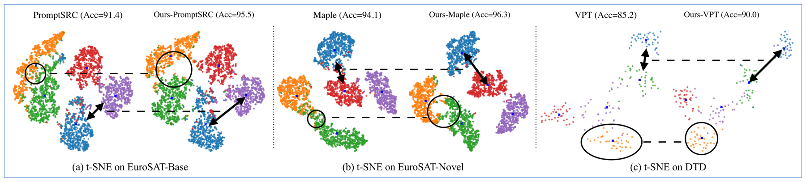
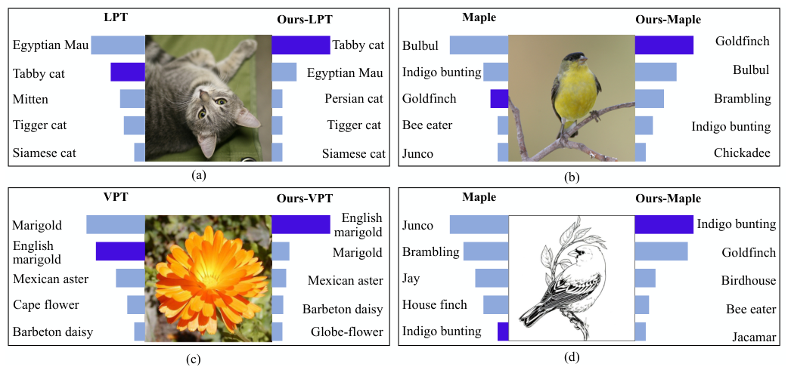

Craft: Cross-modal Aligned Features Improve Robustness of Prompt Tuning
Abstract
Prompt Tuning has emerged as a prominent research paradigm for adapting vision-language models to various downstream tasks. However, recent research indicates that prompt tuning methods often lead to overfitting due to limited training samples. In this paper, we propose a Cross-modal Aligned Feature Tuning (Craft) method to address this issue. Cross-modal alignment is conducted by first selecting anchors from the alternative domain and deriving relative representations of the embeddings for the selected anchors. Optimizing for a feature alignment loss over anchor-aligned text and image modalities creates a more unified text-image common space. Overfitting in prompt tuning also deteriorates model performance on out-of-distribution samples. To further improve the prompt model's robustness, we propose minimizing Maximum Mean Discrepancy (MMD) over the anchor-aligned feature spaces to mitigate domain shift. The experiment on four different prompt tuning structures consistently shows the improvement of our method, with increases of up to 6.1% in the Base-to-Novel generalization task, 5.8% in the group robustness task, and 2.7% in the out-of-distribution tasks.
Highlights
Cross-modal anchors
Image features are classified against text anchors and text features against image anchors. Static anchors give stable references, and stochastic anchors from each batch act as augmentation.
Anchor-aligned MMD
MMD is computed on anchor-aligned features instead of a product measure over two modalities. This makes the in-domain and out-of-domain feature distributions match.
Plug-and-play gains
On top of VPT, LPT, MaPLe and PromptSRC: up to +6.1 in base-to-novel generalization, a 5.8-point smaller group gap and +2.7 out of distribution.
Method
Anchor-based feature alignment. CLIP provides an image encoder \(f_\theta\) and a text encoder \(g_\phi\), where \(\theta\) and \(\phi\) include the learnable visual and text prompts. Instead of comparing an image only with fixed text labels, we compare each sample with anchors \(a_x\) (image) or \(a_y\) (text) drawn from the other modality, which gives a class distribution for each modality:
$$p_x(c = k \mid x; \theta) = \frac{\exp \langle f_\theta(x), a_y^k \rangle}{\sum_{k'} \exp \langle f_\theta(x), a_y^{k'} \rangle},$$ $$p_y(c = k \mid y; \phi) = \frac{\exp \langle g_\phi(y), a_x^k \rangle}{\sum_{k'} \exp \langle g_\phi(y), a_x^{k'} \rangle}.$$Minimizing the negative log-probability of the true class \(k\) under both distributions gives the alignment loss:
$$\mathcal{L}_{\text{Aligned}}(\theta, \phi) = -\log\, p_x(c = k \mid x; \theta)\, p_y(c = k \mid y; \phi).$$The usual text cross-entropy loss is the special case that uses only static text anchors, so \(\mathcal{L}_{\text{Aligned}}\) subsumes it.
Static and stochastic anchors. Static anchors are fixed before training: text templates such as “a photo of a {class}” and k-means centroids of image embeddings. They give consistent reference points. Stochastic anchors are the image and text features of each training batch. They sample the full data support and work like data augmentation. The two are complementary:
$$\mathcal{L}_{\text{Aligned}} = \mathcal{L}_{\text{Aligned}}(\text{static}) + \mathcal{L}_{\text{Aligned}}(\text{stochastic}).$$Anchor-aligned MMD. To handle domain shift, we match in-domain samples \(x \sim \mathbb{P}_x^{\text{id}}\) with unlabeled out-of-domain samples \(x \sim \mathbb{P}_x^{\text{ood}}\). Running MMD over the product of image and text measures would need many more samples. Instead, we project image features onto a unit-norm text anchor \(a_y\) of the same class and compute MMD in a reproducing kernel Hilbert space:
$$\mathcal{L}_{\text{MMD}} = \Big\| \mathbb{E}_{x \sim \mathbb{P}_x^{\text{id}}}\, k\big(f_\theta(x)^{\top} a_y, \cdot\big) - \mathbb{E}_{x \sim \mathbb{P}_x^{\text{ood}}}\, k\big(f_\theta(x)^{\top} a_y, \cdot\big) \Big\|.$$Because \(\|a_y\| = 1\), the projected features keep the Hölder continuity of \(f_\theta\), so the usual consistency guarantees of empirical MMD still hold. Craft plugs into an existing prompt-tuning method by adding \(\mathcal{L}_{\text{Aligned}}\), and \(\mathcal{L}_{\text{MMD}}\) for out-of-distribution adaptation, to its training loss.
Experimental Results
Craft is applied to four prompt-tuning structures: visual (VPT), language (LPT) and multi-modal (MaPLe, PromptSRC). Base-to-novel results are averaged over 11 image classification datasets, with prompts trained on base classes and tested on novel classes.
Base-to-novel generalization (average over 11 datasets)
| Method | Base | Novel |
|---|---|---|
| LPT | 81.0 | 73.1 |
| + Craft | 82.2 +1.2 | 74.9 +1.8 |
| VPT | 78.7 | 72.6 |
| + Craft | 80.5 +1.9 | 74.5 +1.9 |
| MaPLe | 82.3 | 74.2 |
| + Craft | 84.2 +2.0 | 76.5 +2.3 |
| PromptSRC | 83.7 | 75.8 |
| + Craft | 85.6 +1.9 | 77.3 +1.5 |
| Method | Base | Novel |
|---|---|---|
| CLIP (zero-shot) | 69.3 | 74.2 |
| CoOp | 82.7 | 63.2 |
| Co-CoOp | 80.5 | 71.7 |
| KgCoOp | 80.7 | 73.6 |
| ProGrad | 82.5 | 70.7 |
| HPT | 84.3 | 76.9 |
| OGEN | 84.2 | 76.9 |
| DePT | 85.2 | 76.2 |
| PromptSRC + Craft | 85.6 | 77.3 |
Left: Craft adds \(\mathcal{L}_{\text{Aligned}}\) to each baseline and improves both base and novel accuracy for all four structures. The largest single-dataset gain is +6.1 (MaPLe, base classes of StanfordCars). Right: our best model compared with state-of-the-art prompt-tuning methods. Many of them fall below zero-shot CLIP on novel classes, while Craft stays above it.
Group robustness on Waterbirds and CelebA
| Method | Waterbirds | CelebA | ||||
|---|---|---|---|---|---|---|
| WG ↑ | Avg | Gap ↓ | WG ↑ | Avg | Gap ↓ | |
| Contrastive Adapter | 83.7 | 89.4 | 5.7 | 90.0 | 90.7 | 0.7 |
| LPT | 78.5 | 89.6 | 11.1 | 78.8 | 88.6 | 9.8 |
| + Craft | 79.2 | 88.8 | 9.6 −1.5 | 80.4 | 87.9 | 7.5 −2.3 |
| VPT | 79.3 | 87.7 | 8.4 | 79.9 | 89.8 | 9.9 |
| + Craft | 82.1 | 88.9 | 6.8 −1.6 | 82.2 | 90.4 | 8.2 −1.7 |
| MaPLe | 84.6 | 91.8 | 7.2 | 83.6 | 94.2 | 10.6 |
| + Craft | 85.4 | 87.4 | 2.0 −5.2 | 85.4 | 90.1 | 4.7 −5.8 |
| PromptSRC | 85.7 | 92.1 | 6.4 | 89.4 | 93.4 | 3.9 |
| + Craft | 89.6 | 90.7 | 1.0 −5.4 | 90.2 | 91.1 | 0.9 −3.1 |
WG is worst-group accuracy and Avg is average-group accuracy. The goal is to close the gap between them, so a small drop in Avg is expected. Craft raises worst-group accuracy and shrinks the gap for every structure.
Out-of-distribution generalization on ImageNet variants
| Method | Source | Target | ||||
|---|---|---|---|---|---|---|
| ImageNet | -V2 | -Sketch | -A | -R | Avg. | |
| LPT | 71.7 | 64.4 | 48.8 | 50.5 | 75.5 | 59.8 |
| + Craft | 71.9 | 64.7 +0.3 | 48.9 +0.1 | 51.1 +0.6 | 76.1 +0.6 | 60.2 +0.4 |
| VPT | 69.9 | 63.1 | 47.9 | 43.0 | 75.9 | 57.5 |
| + Craft | 70.2 | 63.3 +0.2 | 48.5 +0.6 | 45.1 +2.1 | 76.0 +0.1 | 58.2 +0.8 |
| MaPLe | 70.2 | 63.9 | 48.6 | 50.3 | 76.9 | 59.9 |
| + Craft | 70.8 | 64.1 +0.2 | 51.2 +2.6 | 51.7 +1.3 | 77.8 +0.9 | 61.2 +1.3 |
| PromptSRC | 71.3 | 64.2 | 49.2 | 50.8 | 77.7 | 60.5 |
| + Craft | 71.5 | 65.4 +1.1 | 51.9 +2.7 | 52.0 +1.2 | 77.8 +0.1 | 61.8 +1.3 |
Prompts are trained on ImageNet and evaluated on four shifted variants. Here Craft uses both \(\mathcal{L}_{\text{Aligned}}\) and \(\mathcal{L}_{\text{MMD}}\), and improves every target dataset for all four structures. PromptSRC + Craft (61.8 Avg.) also beats HPT and ArGue-N (60.7).
What Alignment Changes

Better-separated feature space. t-SNE of image features with and without Craft. Arrows show that class clusters move further apart. Circles in (a) and (b) show overlapping classes being separated, and the circle in (c) shows a more compact cluster.

Corrected predictions. Top-5 class probabilities of a baseline (left of each image) and the same baseline with Craft (right). Without \(\mathcal{L}_{\text{Aligned}}\), a tabby cat is labeled Egyptian Mau and a goldfinch is labeled bulbul. With Craft, the correct class ranks first, including for the sketch-style image in (d).